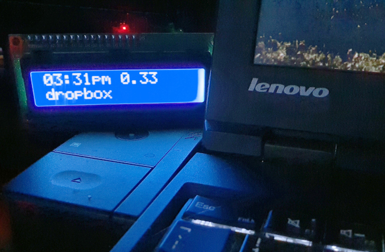
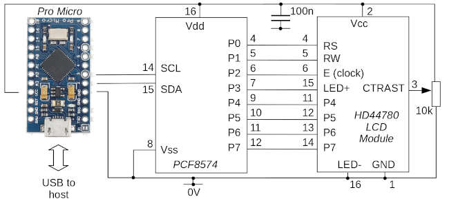

Building and programming a USB auxiliary display using a SparkFun Pro Micro, an HD44780 LCD module, and an PCF8547 I2C-to-parallel IC
 This article is about how to use the ubiquitous HD44780 LCD module
with a Arduino-like microcontroller board such as the SparkFun
Pro Micro, with an I2C interface. The I2C interface is provided by
a PCF8547 I2C-to-parallel IC, which is inexpensive and
widely available. The Pro Micro code uses the standard Arduino
This article is about how to use the ubiquitous HD44780 LCD module
with a Arduino-like microcontroller board such as the SparkFun
Pro Micro, with an I2C interface. The I2C interface is provided by
a PCF8547 I2C-to-parallel IC, which is inexpensive and
widely available. The Pro Micro code uses the standard Arduino
Wire
library for I2C operation, and the Serial library
for USB communication. As a result, all the remaining
complexity in the
code is in interfacing with the I2C-to-parallel converter --
which is very fiddly indeed.
Note:I should point out from the start that Using an I2C interface is not an optimal way to interface the Arduino and the LCD, if you really do want to provide an auxiliary LCD display for a computer. That's because, if all the microcontroller does is operate the LCD module, it has enough GPIO pins to do it directly, using parallel data operations. Using an I2C interface significantly complicates the design and build, and generally slows down the communication.
I also have a article on interfacing the HD44780 to a Raspberry Pi using a similar method here.
However, the article is only partly about providing a USB interface to an LCD display -- it's also about how to use an I2C-to-parallel converter with an Arduino, to minimize the number of GPIO pins that are needed by the display. This is perhaps of more relevance if you're building something that actually uses an LCD display, but with other equipment connected, that also needs GPIO pins. Using potentially eight of the microcontroller's GPIO pins just to operate the LCD display is not very efficient. Using the I2C pins, we only need two data connections between the microcontroller and the display -- just the I2C SDA and SCL lines.
I have to point out also that I'm not going to describe any of the technical details of the HD44780 or the PCF8547 this article. I'll present the circuit diagram, of course, but the hardware is described in depth in my article on using the HD44780 with a Raspberry Pi. The sections of that article that deal with the HD44780 and the PCF8547 are as relevant to the Arduino as they are to the Raspberry Pi.
I will be showing only snippets of code from this application; the full source, and a pre-compiled binary, is available in my GitHub repository.
I wrote this article specifically for Linux users. The circuit and the
compiled Pro Micro firmware -- the .hex file in the
GitHub repository --
should work with other platforms, but I'm in no
position to say for sure, or to advise on how to use them.
In operation, the display looks something like this:

The basic idea
The HD44780 LCD display has been around for decades, and is found in all sorts of equipment. It can be purchased in single units for a few pounds. It has a rather old-fashioned parallel interface, using between six and twelve, 5V (nominal) logic lines. A minimum configuration uses four data lines (so two operations are needed to send one byte to the display), with the LED backlight permanently enabled, and the display permanently in "write" mode. The other two lines are the "register select" line, and the clock (also called "Enable" or "E" in some documentation). That gives the minimum number of connections -- six.
This minimal configuration is suitable for many applications. However, if you want to be able to control the backlight in software, then you'll need to connect something to its control pin. If you want to be able to read from the display (necessary if you're using custom graphics), then another pin will be connected to the R/W line on the display. And, of course, you could choose to use eight data lines rather than four, if you really needed the additional speed.
An Arduino-like microcontroller will typically have eighteen GPIO pins, so there's enough to use the HD44780 in its full-blown configuration, using dedicated pins. This is easy to program, as well as minimizing parts. However, using this many pins for the relatively slow operation of sending data to the LCD display seems rather wasteful. Using I2C needs only two controller pins but, of course, the HD44780 doesn't have any I2C support.
The PCF8574 is an I2C-to-parallel converter. It accepts 8-bit I2C data packets, and outputs them on eight data lines. It can also work as an input, reading eight data lines and providing them as a block to the I2C bus. The eight lines of the PCF8547 are enough to operate the HD44780 well in four-bit mode -- we use four outputs from the 8547 for the four data lines, and the other four for R/W , clock, register select, and the LED backlight.
This design is economical of GPIO pins, but very fiddly to program. That's because we can only change the state of a specific line on the HD44780 display by sending an entire 8-bit block over I2C. So the controller program has to keep track of which lines are set to which values at all times, so it can synthesize 8-bit blocks from the stored state of the display pins.
The complexities of the interface logic are described in much more detail in my my article on using the HD44780 with a Raspberry Pi, and are not significantly different when using an Arduino instead.
The circuit
Bearing in mind the factors described above, here is the complete circuit. Note that the decision about which output pins P0-P7 on the PCF8574 connect to which pins on the LCD module is completely arbitrary. P0-P7 are just general data outputs -- we'll need to take account in software of what is connected where. The pin assignments in the circuit match those in my Pro Micro code, but I've tried to make it clear in the source where you'd define different pin assignments.

Note:
There are a number of commercial HD44780 modules on the market, that include an I2C interface based on the PCF8574. These may, or many not, work with my controller code, depending on how the 8574 and the display are connected.
For future expansion, my design has the LCD display's R/W line connected to an output of the 8547, so the display can, in principle, be read. However, my code currently does not use this facility.
Arduino program
Because the USB logic is handled by libraries, the main body of the
program code is very simple. Here is a simplified version (the
full code is in usb_led.cpp).
LCD8574Arduino lcd (0x27, 16, 2);
void setup()
{
Serial.begin (57600);
lcd.init();
lcd.backlight_on();
}
void loop()
{
Serial.flush();
while (!Serial.available());
uint8_t c = Serial.read();
lcd.write_char (c);
}
All the logic for controlling the LCD panel via the PCF8547 IC
is in the class LCD8574Arduino (of which, more later).
The setup() function just initializes the lcd
instance and the Serial library.
The loop() method just waits for USB data to become
available, reads a character, and then passes it to the
write_char() method.
The implementation of the LCD8574Arduino class is
in lcd8574arduino.cpp. I think most of this class
is reasonable self-explanatory, if you have the HD44780 datasheet
to hand. The core of the class is the method send_byte(),
which does exactly what it says. Because we're using 4-bit mode,
this method splits the byte into two 4-bit chunks, and calls
write4bits on each. The write4bits
method calls write_i2c_byte() to set a byte
onto the I2C bus, and then calls do_clock() to
toggle the clock line for the necessary timing. Note that
each four-bit block of data requires a whole byte to be
written to the I2C bus. Of that byte, only four bits
are the data -- another bit is used for the "register select"
line, which will be 0 if we're sending a command, and 1 if
we're sending data. Another bit is used to control the LED
backlight; this value is stored as part of the program's
state, and merged into each I2C write.
The do_clock() method sets the clock (or Enable)
line high for one microsecond, and then low again for
50 microseconds. The time between clock strobes in the datasheet
is 37 microseconds, but I'm not sure how accurate the microsecond
timer on an Arduino board is. It seemed better to allow a bit
of a margin. Again, we can't just change the state of the
clock line, because we have to write all eight lines in
one operation over I2C; so the other (non-clock) lines are
written again, with their original values.
Most of the character values processed by write_char()
are simply passed to the LCD display as data bytes. However,
the code does recognize a few special characters.
Carriage return and line feed have their usual meanings, and
a form feed (character 12) clears the display completely.
This allows a client application to reset the display for
a new text update. There's no vertical scrolling built into
the code, but it would be relatively easy to add. However, this
would require adding logic to read characters from the LCD display,
or maintaining a buffer that holds a copy of the display contents.
In a more complex application, these additions might be useful.
In use
When running the application code, the Arduino acts like a
USB-to-serial converter. With a Linux host, it will usually
appear as a /dev/ttyUSB or /dev/ttyACM
device. Sending data to the appropriate device should cause
it to be displayed. On some Linux systems, the modem manager
will try to get control of the device when it detects it, which can lead to
conflicts. These are irritating, but don't usually cause
long-standing problems.
Closing remarks
Using an I2C-to-parallel adapter to connect an Arduino board to an LCD display is not fast, or easy to program. An alternative way to minimize the number of GPIO pins required, which is conceptually similar, would be to use a traditional logic-level shift register like the 74HC595 rather than an I2C-to-parallel device. This would be faster, and marginally cheaper, but would lose the ability to chain devices that I2C has.